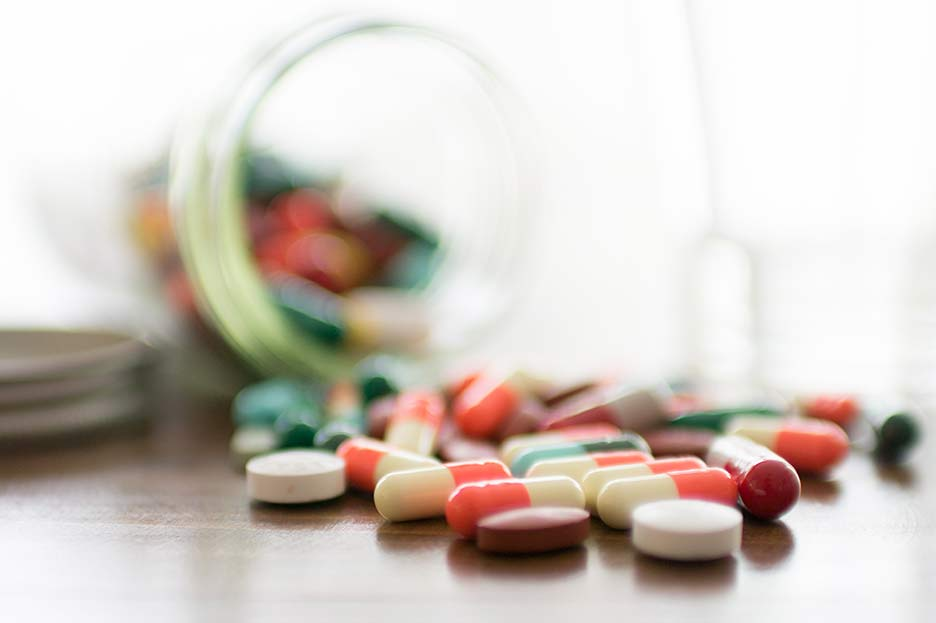

INFORMACION SOBRE EL TEMA
Bienvenido a la sección de información, aquí podrás hacer una retro alimentación del tema propuesto en el juego y además si deseas profundizar mas el tema, puedes aprender con la siguiente información:
¿COMO ES LA CREACION DE LOS MEDICAMENTOS?
La creación de medicamentos es fundamental para la salud y bienestar de las personas, los cuales son esas Sustancias que sirven para curar o prevenir una enfermedad, para reducir sus efectos sobre el organismo o para aliviar un dolor físico, por ello las industrias farmacéuticas los crean basándose en algunos pasos:
Pasos para la creación de Medicamentos
Producción piloto del principio farmacologicamente activo: Este es el primer paso para la elaboración de un medicamento, donde un laboratorio o una empresa empieza fabricando una prueba sobre el principio activo que posteriormente hablaremos, con el cual se va a basar el medicamento, a partir de ahí, una vez ya fabricado este va a tener un control de calidad, en el cual se fijan si funciona y cumple con los requisitos médicos.
.jpg)
Producción del medicamento: Una vez pasada el control de calidad, si es aceptado se va a proceder a la creación medicamento a buscar con ese principio activo, pero solo una muestra ya que después tendrá que volver a someterse al control de calidad.
 Producción industrial del principio farmacologicamente activo: Una vez aceptado el control de calidad, se va a empezar la fabricación industrial de principios activos, es decir muchos principios activos, que al final otra vez se tendrán que volver a someterse al control de calidad.

Producción industrial del medicamento: Una vez aceptado el control de calidad a los principios activos, se empiezan a crear industrialmente los medicamentos para entrar al mercado, sin antes pasar por el control de calidad.